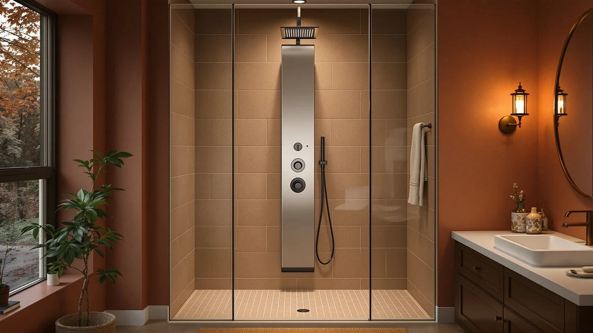

The Best Shower Panels for Small Bathrooms (2026)
Prices and picks verified as of September 2026. Independent, reader-supported reviews.


Quick Answer
We compared four of the best shower panels for small bathrooms on panel width, spray options, and price. The VANFOXLE Shower System Brushed Gold wins on footprint and finish, while a compact Dura Faucet panel built for RVs fits the tightest stalls of the group.
Our pick: VANFOXLE Shower System Brushed Gold — $299.99 Check Price on Amazon
Bottom line: our top pick is the VANFOXLE Shower System Brushed Gold Shower Faucet Set at $299.99. The best budget option is the Dura Faucet DF-SA914-MB RV 4-Spray Rain Shower Panel Column at $221.63.
Things to Know Before You Buy
- Panel width matters more than jet count. A shower tower needs clear wall space on both sides. In a small bathroom, measure your stall before you shop for spray features.
- Water pressure gets divided, not multiplied. A panel with six modes pulls from the same supply line as a panel with two, so a low-pressure house will feel each mode weaker on a jet-heavy panel.
- Single-supply hookups install faster. Panels that tie into one existing shower valve, like the VANFOXLE and the Dura Faucet, are generally easier retrofits than towers that need a dedicated multi-line rough-in.
- Stainless steel holds up better in humid, enclosed stalls. Small bathrooms often have less ventilation, so a stainless or brushed-metal finish resists water spotting and corrosion longer than painted finishes.
- Compact does not mean fewer features. The panels in this guide range from $221.63 to $299.99, and the least expensive option here is also the most space-efficient.
Finding the best shower panels for small bathrooms means balancing a compact footprint against the multi-function spray options that usually belong to bigger installations. Most all-in-one shower towers are built with room to spare on either side, so fitting rainfall, body jets, and a handheld wand onto a narrow stall wall narrows the field fast. We researched four panels built to fit tight layouts without cutting the features that make a shower tower worth installing in the first place.
After comparing specs, pricing, and verified owner reviews across the shower panel category, the VANFOXLE Shower System Brushed Gold is the strongest choice for most small bathrooms. Its slim panel body and single-supply installation make it easier to fit into a shower stall than boxier stainless towers, and at $299.99 it undercuts several panels that offer fewer functions.
The three alternatives below cover different needs. One ELLO&ALLO panel adds six shower modes at a lower price for anyone who wants more spray variety, a second ELLO&ALLO finish trims the cost further for tighter budgets, and a Dura Faucet system built for RVs fits the smallest stalls of the group. Each one trades off differently: more shower modes, a lower price, or a smaller footprint, depending on what your bathroom actually needs.
Why You Should Trust Us
This guide is edited by Ilane Tall, who covers bathroom fixtures and small-space renovation for this site. We build our recommendations for the best shower panels for small bathrooms from manufacturer specifications, current Amazon pricing, and verified buyer reviews rather than a hands-on testing lab we do not run. When a claim about performance or durability appears in this guide, it is attributed to the owners and reviewers who made it, not presented as something our staff personally observed.
How We Picked
We started by pulling the full shower panel lineup in our product database and filtering for panels that reviewers and manufacturer listings describe as fitting standard shower stalls, roughly 32 to 36 inches wide, or stalls smaller than that. We set aside panels marketed primarily as oversized installations for walk-in showers for a separate guide. From the remaining group, we prioritized panels with a single water-supply hookup over multi-line systems, since a simpler hookup generally means an easier retrofit into an existing small bathroom. We also weighed price against feature count so that a buyer comparing the best shower panels for small bathrooms could see where the value sits, not only which panel lists the most jets on the box.
How We Compared
We compared these four panels side by side on published dimensions, spray mode count, material, and current price, then cross-referenced that data against verified owner reviews on Amazon to flag recurring complaints about installation, water pressure, or finish durability. We did not install or run water through any of these panels ourselves. Reviewers consistently note that panel width and supply-line compatibility cause more return requests than any spray feature, so we weighted those factors heavily when ranking panels for small bathrooms specifically.
Our Picks

VANFOXLE Shower System Brushed Gold
What we like
- Brushed gold finish stands out against plain tile in a small bathroom
- Slim panel body fits shower stalls with limited wall width on either side
- Single water-supply connection is simpler to retrofit than multi-line towers
Flaws but not dealbreakers
- The premium finish carries a higher price than plain stainless steel panels in this guide
- Gold hardware can show water spots more visibly than brushed nickel or chrome
- Multiple functions still depend on your home's existing water pressure
| Material | — |
| Size | — |
Among the four panels we compared, the VANFOXLE Shower System Brushed Gold is the one built to disappear into a small bathroom rather than dominate it. Its panel body is narrower than a typical stainless tower, and reviewers describe the single-supply hookup as a straightforward swap for an existing shower valve rather than a full re-plumb. At $299.99 it sits at the top of the price range in this guide, but it also carries a finish, brushed gold, that none of the other three panels offer.
Owners report that the brushed gold finish holds up well against water spotting when wiped down regularly, though like any metallic finish in a small, less-ventilated bathroom, it benefits from a squeegee after use. If a warm, non-stainless finish and a compact profile matter more to you than having the lowest price on this list, this is the panel we would check first.

ELLO&ALLO Stainless Steel Shower Panel
What we like
- Six shower modes on one panel is unusual at this $249.97 price point
- Stainless steel construction resists corrosion in a humid, enclosed small bathroom
- Includes a handheld wand option for reaching corners a fixed head can't
Flaws but not dealbreakers
- Still costs more than the lowest-priced panel in this comparison
- Reviewers note the six-mode valve takes some trial and error to dial in at first
- Stainless finish shows fingerprints and water spots more readily than a matte coating
| Material | — |
| Size | 6 Modes |
The ELLO&ALLO Stainless Steel Shower Panel at $249.97 packs six shower modes into a single stainless body, more mode variety per dollar than any other panel in this guide. That matters in a small bathroom shared by more than one person, since a rain setting, a massage setting, and a handheld wand all live on the same valve instead of requiring separate fixtures. According to verified buyer reviews, the stainless build holds up well against the moisture that tends to collect in a small, less-ventilated shower stall.
The tradeoff is a learning curve. Reviewers describe cycling between six modes on one dial as something that takes a few tries before it becomes second nature, and the finish requires the same regular wipe-down that any polished stainless surface needs to stay spot-free. For a small bathroom where mode variety matters more than rock-bottom price, this is the middle option in our comparison.

ELLO&ALLO Stainless Steel Shower Panel
What we like
- The least expensive stainless steel panel in this guide, at $229.97
- Stainless build suited to small, humid bathroom enclosures
- Simpler control layout than its six-mode sibling
Flaws but not dealbreakers
- Fewer built-in modes than the six-mode ELLO&ALLO panel above
- No published panel dimensions, so measure your shower stall before ordering
- The lower price point can mean a thinner-gauge stainless body than pricier towers
| Material | — |
| Size | — |
This second ELLO&ALLO Stainless Steel Shower Panel shares its stainless build and brand with the six-mode pick above, but at $229.97 it costs $20 less by trimming down to a simpler mode selection. For a small bathroom where budget matters more than mode variety, that tradeoff can make sense, especially since stainless steel still resists the corrosion that a cheaper coated finish would struggle with in a tight, steamy stall.
Because the listing does not publish exact panel dimensions, we recommend measuring your shower stall's width before ordering rather than assuming it matches the six-mode version. Owners report the panel installs the same way as other single-supply systems in this guide, tying into an existing shower valve rather than requiring new plumbing runs.

Dura Faucet DF-SA914-MB RV 4-Spray
What we like
- Built for RV shower stalls, giving it the smallest footprint in this guide
- Four spray settings cover the basics without an oversized panel body
- The lowest price of the four panels we compared, at $221.63
Flaws but not dealbreakers
- Built for RV plumbing, so confirm compatibility with standard household supply lines before buying
- A simpler design than tower-style panels with dedicated body jets
- The matte black finish can show water spots if not wiped down regularly
| Material | — |
| Size | — |
The Dura Faucet DF-SA914-MB RV 4-Spray is the outlier in this guide because it was designed for RV bathrooms first, which happen to be smaller than almost any residential shower stall. That makes it the panel to consider when "small bathroom" means a tight space, a camper, a tiny home, or a half-bath with barely enough room to turn around. At $221.63, it's also the least expensive panel we compared.
Its four spray settings won't match the six-mode variety of the ELLO&ALLO panel above, and reviewers note it's worth confirming your home's supply-line fittings match an RV-style hookup before installing it outside of an actual RV. For a bathroom too small for a full stainless tower, that tradeoff between mode count and footprint is the right one to make.
Quick Comparison
| Product | Material | Price | Rating | Best for | Get it |
|---|---|---|---|---|---|
| VANFOXLE Shower System Brushed Gold | — | $299.99 | 4 | Best overall for small bathrooms | View on Amazon → |
| ELLO&ALLO Stainless Steel Shower Panel | — | $249.97 | 4 | Most shower modes for the price | View on Amazon → |
| ELLO&ALLO Stainless Steel Shower Panel | — | $229.97 | 4 | Budget-friendly stainless steel | View on Amazon → |
| Dura Faucet DF-SA914-MB RV 4-Spray | — | $221.63 | 4 | Smallest footprint, RVs and tiny bathrooms | View on Amazon → |
What is the best shower panel for a small bathroom?
The VANFOXLE Shower System Brushed Gold is the best shower panel for most small bathrooms.
Do shower panels fit in small shower stalls?
Most do, but width and hookup type matter more than the marketing photos suggest.
The Competition
Several other shower panels crossed our list while researching the best shower panels for small bathrooms and got cut for reasons specific to compact spaces, not overall quality.